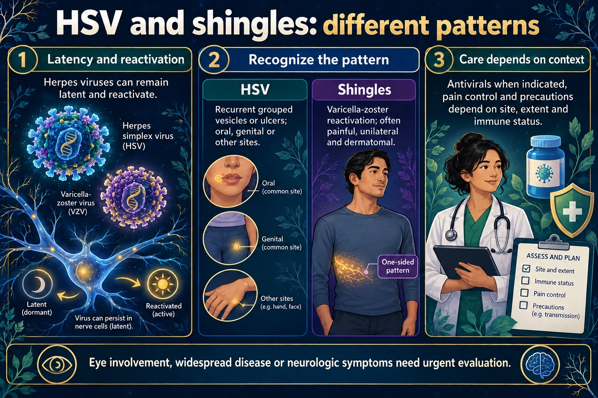

HSV & Shingles ⚡
Herpes simplex & herpes zoster — the viruses that live in your nerves
Shingles is reactivation of the varicella-zoster virus — chickenpox that has been asleep in a nerve ganglion for decades. When immunity dips it travels back down the nerve and blisters the skin that nerve supplies: one dermatome, one side, stopping at the midline, with burning pain 2–3 days before the rash. Herpes simplex does the same trick on the lip or genitals. All of them are treated with the "-cyclovir" family, started within 72 hours — and the contagion rule is the one students get wrong: a person without varicella immunity catches chickenpox, not shingles.
📄 Simple Nursing original — opens in Drive →
Read the full PDF here
THE SKIN MODEL
STEP 0 · LEARN THIS ONCESame skin drawing as every page in this set — this time the disease arrives down the nerve instead of through the surface.
🔬 Skin cutaway — the only one that comes from the INSIDE
DEPTH = THE ANSWER Bacteria and fungi come in from outside. This virus lives in a sensory nerve ganglion and travels down the axon into the epidermis it supplies. That is why the rash is banded, one-sided and painful before it is visible.

Eye involvement, disseminated disease or neurologic symptoms needs urgent evaluation.
Read the picture
Viral infection
Herpes viruses can establish latency.
Reactivation
Virus may become active again.
Skin and nerve findings
Patterns depend on the virus and site.
HSV
Recurrent grouped vesicles or ulcers can occur at oral, genital or other sites.
Shingles
Varicella-zoster reactivation commonly causes painful unilateral dermatomal lesions.
Care
Antivirals when indicated, pain control and precautions based on site, extent and immune status.
📖 Lesion vocabulary — this is a vesicle disease
Vesicle → pustule → crust, all in a band. Highlighted below.
PATHO & CAUSES
STEP 1 · WHY IT HAPPENSAn old virus, a tired immune system, and a nerve that remembers exactly where it goes.
🧠 The one-sentence definition
Shingles (herpes zoster) is reactivation of the varicella-zoster virus — the virus that caused chickenpox — from a sensory nerve ganglion, producing a painful blistering rash in the dermatome that nerve supplies.
Herpes simplex (HSV-1 / HSV-2) behaves the same way: it hides in ganglia and reactivates as grouped vesicles in the same spot each time.
⚙️ Mechanism, step by step
🧬 Where it comes from — chickenpox that never left
⭐ Risk factors — "defenses are down"
- Age — risk rises sharply after 50, as VZV-specific immunity wanes
- Immunosuppressive drugs — corticosteroids, chemotherapy, transplant drugs, biologics
- Cancer, especially hematological; HIV; other immunodeficiency
- Another active infection (e.g. pneumonia) occupying the immune system
- Major physical or emotional stress, fatigue, poor nutrition
- Surgery, trauma, radiation
🧪 Bug → drug: the rule that runs this whole set
CLUES
STEP 2 · WHAT YOU SEEPain first, then a one-sided band of grouped blisters that refuses to cross the midline.
👀 Signs & symptoms
- Prodrome: burning, tingling, itching, numbness or stabbing pain in one strip of skin, 2–3 days before the rash
- Rash: red papules → grouped vesicles on an erythematous base → pustules → crusts
- Unilateral, following one dermatome, most often the trunk (thoracic) — it stops at the midline
- Paraesthesia — burning, numbness, tingling, hypersensitivity to touch
- Low-grade fever < 38 °C / 100.4 °F, headache, malaise, fatigue
- Itching as it crusts
🩺 How it is diagnosed
- Clinical — the dermatomal pattern plus grouped vesicles is usually enough
- PCR / viral swab of vesicle fluid if the picture is unclear or the patient is immunocompromised
- A direct fluorescent antibody test may be used where available
- Consider testing for immunosuppression (including HIV) in a young patient with shingles
- Ophthalmology review without delay if the eye or nose tip is involved
🗺️ Dermatomes — why the rash stops at the midline
⏱️ The timeline — and the two clocks you are watching
🚨 Shingles on the face — the two emergencies
📉 Postherpetic neuralgia — the commonest complication
CARE
STEP 3 · WHAT YOU DOAntiviral early, pain controlled properly, and everyone around the patient protected.
🦠 Who can catch what — the rule everyone gets wrong
💊 Antivirals — the "-cyclovir" family
- Acyclovir · valacyclovir · famciclovir
- Start as early as possible, ideally within 72 h of the rash appearing
- They shorten the illness and reduce the risk of postherpetic neuralgia — they do not eradicate the virus
- Encourage fluids — adequate hydration matters, especially with IV acyclovir, which can affect the kidneys
- Give doses on time; monitor renal function as prescribed
- For HSV, the same drugs are used episodically or as daily suppression
🛡️ Precautions — get this right
- Localized shingles in an immunocompetent patient: standard + contact precautions; cover the lesions with a dressing
- Disseminated zoster, or zoster in an immunocompromised patient: airborne + contact precautions — negative-pressure room until lesions are crusted
- Chickenpox (varicella): always airborne + contact
- Staff and visitors must be immune — non-immune, pregnant or immunocompromised people should not care for or visit the patient
- Keep away from newborns, pregnant people without immunity, and the immunosuppressed
- Precautions continue until all lesions are crusted
😖 Pain — treat it like nerve pain, not a scrape
- Assess it properly and regularly — this pain is frequently under-treated
- Neuropathic agents: gabapentin or pregabalin, tricyclic antidepressants
- Topical: lidocaine patch or gel; capsaicin (only on intact, healed skin)
- Analgesics as prescribed; opioids may be needed short-term for severe acute pain
- Cool compresses, calamine, colloidal oatmeal baths for comfort
- Loose cotton clothing — even fabric can hurt (allodynia); a bed cradle keeps sheets off the skin
✅ Skin & comfort care
- Keep lesions clean, dry and COVERED with a non-adherent dressing
- Do not rupture the blisters — the fluid is infectious and the skin is a barrier
- Keep nails short; discourage scratching (secondary bacterial infection risk)
- Watch for secondary infection: increasing pain, spreading redness, pus, fever
- Hand hygiene before and after all contact; gloves for lesion care
- Support rest, nutrition and fluids — the immune system needs them
- Acknowledge the emotional load: the pain is exhausting and often invisible to others
💉 Prevention — vaccination
- Recombinant zoster vaccine (Shingrix) — 2 doses, recommended for adults 50 years and older, and for immunocompromised adults 19+ per current guidance
- It is recommended even if the person has already had shingles or does not remember having chickenpox
- It is not a live vaccine; expect a sore arm, tiredness or aches for a day or two — that is a normal response
- Varicella (chickenpox) vaccine in childhood prevents the primary infection in the first place
- Vaccination is the most reliable way to lower the risk of shingles and of postherpetic neuralgia (starting the antiviral early also lowers it)
❌ Never do these
- Never let a non-immune, pregnant or immunocompromised person care for or visit the patient.
- Never break the blisters — the fluid is loaded with live virus.
- Never treat facial shingles as routine; ask about the eye every time.
- Never delay the antiviral waiting for a test result.
- Never tell a patient shingles is "caught" from someone else's shingles — it comes from their own dormant virus.
TELL THEM APART
STEP 4 · THE REAL EXAM SKILLOne band that stops at the midline is shingles. Everything else is something else.
🗺️ Where each one shows up
🧬 Three herpesviruses, three patterns
| HSV-1 | HSV-2 | VZV (shingles) | |
|---|---|---|---|
| Classic site | Lip border, mouth | Genital area | One dermatome, often trunk |
| Pattern | Small recurring cluster | Painful grouped ulcers | Unilateral band, stops at midline |
| Latent in | Trigeminal ganglion | Sacral ganglia | Dorsal root ganglia |
| Recurs? | Often, same spot | Often, decreasing over time | Usually once, can recur |
| Treatment | All three: the "-cyclovir" family — acyclovir, valacyclovir, famciclovir | ||
📊 Shingles vs chickenpox
| SHINGLES | CHICKENPOX | |
|---|---|---|
| Which event | Reactivation | First infection |
| Spread | One dermatome, one side | All over the body |
| Age | Usually older adults | Usually children |
| Pain | Severe, comes first | Itch > pain |
| Precautions | Contact (airborne if disseminated / immunocompromised) | Airborne + contact |
⭐ NCLEX traps
- A contact does not "get shingles" — a non-immune contact gets chickenpox.
- The patient is contagious until every lesion is crusted, not until the pain stops.
- Antiviral within 72 h of rash onset — do not pick "wait for the culture."
- Localized, covered shingles in a well patient = contact precautions; disseminated or immunocompromised = airborne.
- Pain before a rash in one strip of skin is shingles until proven otherwise.
- Lesions on the nose tip → the eye is at risk → urgent referral.
- Shingles pain is neuropathic — gabapentin-type drugs, not just acetaminophen.
🧠 One-line contrasts
- Shingles vs cellulitis — blistered band with burning nerve pain vs diffuse hot red swelling
- Shingles vs contact dermatitis — dermatomal vs shaped like whatever touched the skin
- Shingles vs impetigo — clustered vesicles on a red base vs honey crust
- Shingles vs tinea — painful band vs itchy ring
- HSV vs impetigo — recurs in the same spot after tingling vs new golden crusts anywhere
WHAT IT LOOKS LIKE
PHOTO GUIDEPanel 3 is shingles. Look at where it stops.
🖼️ Skin Conditions — visual study guide